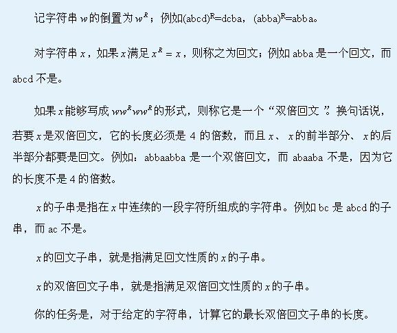
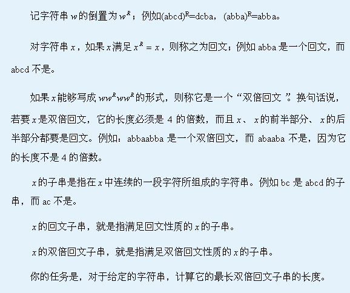

| F.A.Qs | Home | Discuss | ProblemSet | Status | Ranklist | Contest | 入门OJ | ModifyUser Xeonacid | Logout | 捐赠本站 |
|---|
| F.A.Qs | Home | Discuss | ProblemSet | Status | Ranklist | Contest | 入门OJ | ModifyUser Xeonacid | Logout | 捐赠本站 |
|---|

输入分为两行，第一行为一个整数 ，表示字符串的长度，第二行有
，表示字符串的长度，第二行有 个连续的小写的英文字符，表示字符串的内容。
个连续的小写的英文字符，表示字符串的内容。
输出文件只有一行，即：输入数据中字符串的最长双倍回文子串的长度，如果双倍回文子串不存在，则输出0。
N<=500000